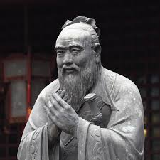

¿Quién fue Confucio?
Confucio fue un influyente pensador, maestro y filósofo chino nacido en el año 551 a.C. en el estado de Lu, durante la dinastía Zhou. Su nombre real era Kong Qiu, y es considerado el fundador del confucianismo, una corriente filosófica centrada en la moral, la familia, la educación y la armonía social.
Tabla de datos importantes sobre Confucio
| # | Dato | Información |
|---|---|---|
| 1 | Nombre real | Kong Qiu (孔丘) |
| 2 | Nacimiento | 551 a.C., Estado de Lu |
| 3 | Fallecimiento | 479 a.C. |
| 4 | Obra principal | Los Analectos (Lunyu) |
| 5 | Legado | Fundador del confucianismo |
Ideas principales del Confucianismo
Confucio promovía cinco valores fundamentales: la benevolencia (ren), la rectitud (yi), la propiedad (li), la sabiduría (zhi) y la fidelidad (xin). Según él, la base de una sociedad justa era la familia, por lo tanto, enseñaba la importancia de la piedad filial y el respeto por los mayores.
Influencia en la historia
Su pensamiento ha influido en la política, la educación, la cultura y la ética en China y gran parte de Asia. Durante siglos, sus enseñanzas fueron parte fundamental de los exámenes imperiales y de la vida cotidiana de millones de personas.
Frases célebres
- “Elige un trabajo que te guste y no tendrás que trabajar ni un día de tu vida.”
- “Donde hay educación, no hay distinción de clases.”
- “Estudia el pasado si quieres pronosticar el futuro.”